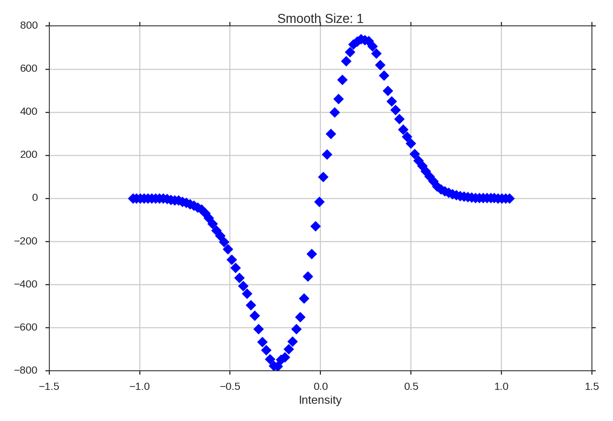

Genus statistics provide a measure of a region’s topology. At a given value in the data, the Genus value is the number of discrete regions above the value minus the number of regions below it. When this process is repeated over a range of values, a Genus curve can be constructed. The technique has previously been used to study CMB deviations from a Gaussian distribution.
If a region has a negative Genus statistics, it is dominated by holes in the emission (“swiss cheese” morphology). A positive Genus value implies a “meatball” morphology, where the emission is localized into clumps. The Genus curve of a Gaussian field is shown below. Note that at the mean value (0.0), the Genus value is zero: at the mean intensity, there is no preference to either morphological type.
Kowal et al. 2007 constructed Genus curves for a set of simulations to investigate the effect of changing the Mach number and the Alfvenic Mach number. The isocontours were taken for a range of density values in the full position-position-position space. Applications to observations includes Chepurnov et al. 2008 and Burkhart et al. 2012.
The data in this tutorial are available here.
We need to import the Genus code, along with a few other common packages:
>>> from turbustat.statistics import Genus
>>> from astropy.io import fits
>>> import astropy.units as u
>>> import numpy as np
And we load in the data:
>>> moment0 = fits.open("Design4_flatrho_0021_00_radmc_moment0.fits")[0] # doctest: +SKIP
The FITS HDU is passed to initialize Genus:
>>> genus = Genus(moment0, lowdens_percent=15, highdens_percent=85, numpts=100,
... smoothing_radii=np.linspace(1, moment0.shape[0] / 10., 5)) # doctest: +SKIP
lowdens_percent and highdens_percent set the upper and lower percentiles in the data to measure the Genus value at. When using observational data, lowdens_percent should be set above the noise level. Alternatively, specific values for the low and high cut-offs can be passed using min_value and max_value, respectively. The min_value and max_value settings are overridden when lowdens_percent > min_value or highdens_percent < max_value.
The numpts parameter sets how many Genus values to compute between the given percentiles. Finally, smoothing_radii allows for the data to be smoothed, minimizing the influence of noise on the Genus curve at the expense of resolution. The values given are used as the radii of a Gaussian smoothing kernel. The values given above (np.linspace(1, moment0.shape[0] / 10., 5)) are used by default when no values are given.
Computing the curves is accomplished using run:
>>> genus.run(verbose=True, min_size=4) # doctest: +SKIP
If min_value and max_value are set instead:
>>> genus = Genus(moment0, min_value=137, max_value=353, numpts=100) # doctest: +SKIP
>>> genus.run(verbose=True, min_size=4) # doctest: +SKIP
I have set min_value and max_value to the same percentiles used above and so we get the same result.
The basic sinusoid seen in the Genus curve of the Gaussian field is still evident. As we smooth the data on larger scales, the topological information is lost, and the curve becomes degraded. To avoid spurious noise features, the minimum area a region must have to be considered is set by min_size. This is simulated data, so a small value has been chosen.
Often the smallest size that can be “trusted” in a radio image is the beam area. In this example, a FITS HDU was passed, including an associated header. If the beam information is contained in the header, the size threshold can be set to the beam area using use_beam=True:
>>> moment0.header["BMAJ"] = 2e-5 # deg. # doctest: +SKIP
>>> genus = Genus(moment0, lowdens_percent=15, highdens_percent=85,
... smoothing_radii=[1] * u.pix) # doctest: +SKIP
>>> genus.run(verbose=True, use_beam=True) # doctest: +SKIP
The curve has far less detail than in the earlier example because of the new requirement for large, connected regions. Note that the FITS keywords “BMIN” and “BPA” are also read and used when available. More options for reading beam information are available when the optional package radio_beam is installed. If the beam information is not contained in the header, or you wish to use any other minimum area, the size can be passed using min_size. To get the same result as the last example:
>>> genus.run(verbose=True, use_beam=True, min_size=2e-5**2 * np.pi * u.deg**2) # doctest: +SKIP
If a distance is given to Genus, areas and smoothing radii can be passed in physical units:
>>> genus = Genus(moment0, lowdens_percent=15, highdens_percent=85,
... smoothing_radii=u.Quantity([0.04 * u.pc]), distance=500 * u.pc) # doctest: +SKIP
>>> genus.run(verbose=True, min_size=40 * u.AU**2) # doctest: +SKIP
Note that the smooth size shown in the plots is always the smoothing radius in pixels.